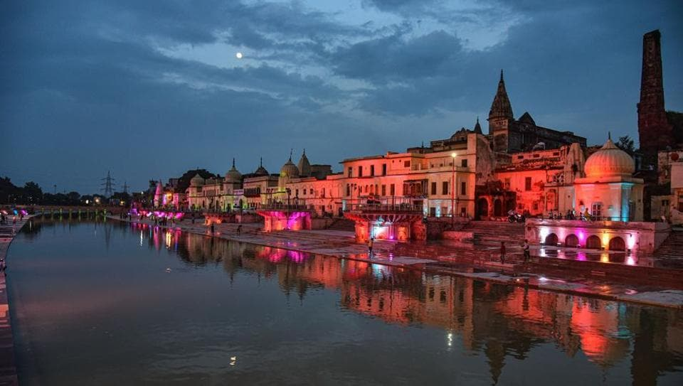
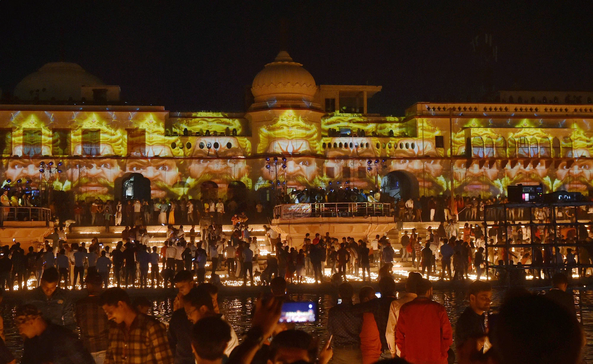

Welcome TO Ayodhya Darshan Gallery
Ram Mandir
Shri Ram Mandir, popularly known as Ram Mandir, is a Hindu temple located in Ayodhya, Uttar Pradesh. As the name suggests, the temple is dedicated to Lord Shri Rama and is believed to have been built at Ram Janmabhoomi (the birthplace of Lord Shri Rama).
The Ram Mandir is a Hindu temple under construction in Ayodhya, Uttar Pradesh, at the site of Ram Janmabhoomi, the presumed birthplace of Lord Rama. The construction follows a Supreme Court verdict in 2019, allocating the disputed land to Hindus for the temple and providing Muslims with an alternative site for a mosque.
The temple's construction began with a groundbreaking ceremony in 2020, led by Prime Minister Narendra Modi. The design, originally created in 1988 by the Sompura family, underwent modifications in 2020. Once complete, the temple is expected to be the world's third-largest Hindu temple, featuring a unique architectural style and various mandapas.
The temple project has faced controversies, including allegations of donation misuse, sidelining activists, and politicization by the BJP. The Babri Masjid, previously on the site, was demolished in 1992, leading to inter-communal violence. The political and religious aspects of the issue have been significant.
The presiding deity is Ram Lalla Virajman, the infant form of Lord Rama. The temple complex will also include shrines dedicated to Surya, Ganesha, Shiva, Durga, Vishnu, and Brahma. The idol of Ram Lalla was selected through a voting process in December 2023.
The temple's inauguration is scheduled for 22 January 2024, with the installation of the Lord Ram idol in the sanctum sanctorum. Prime Minister Narendra Modi has been formally invited to attend the ceremony. The construction has faced temporary delays due to the COVID-19 pandemic, with the first phase initiated in March 2020.
Kanak Bhawan
Kanak Bhawan is to the north-east of Ram Janam Bhumi, Ramkot, in Ayodhya. Kanak Bhawan is one of the finest and famous temples in Ayodhya and is a must visit.
It is believed that this Bhawan was gifted to Devi Sita by Kaikei immediately after her marriage to Lord Ram. This is private palace of Devi Sita and Lord Rama.
Over the centuries, Kanak Bhawan underwent several renovations and restorations. King Vikramaditya played a pivotal role in preserving this sacred site during his reign. But the way the temple looks now is mostly because of Vrish Bhanu Kunwari. She is the Queen of Teekamgarh in Madhya Pradesh. Her dedication to the preservation of this temple ensures that Kanak Bhawan stands proudly even today.
Stepping inside Kanak Bhawan is like entering a realm of divine beauty. The main idols installed in the garbhgrih (sanctum) are none other than Lord Rama and Devi Sita, adorned with golden crowns that shimmer in the soft, incandescent light. This sight leaves visitors in awe, evoking a deep sense of spirituality and reverence.
Lord Rama
Kanak Bhawan is also famous as the Sone-ka-Mandir, which translates to the Temple of Gold. This name is fitting because of the golden crowns on the idols inside. The inner part of the temple is protected by a shiny silver roof, which makes the temple look even more rich and attractive.
Hanuma Garhi
Hanuman Garhi or Hanuman Gadi, is dedicated to Bhakta Hanuman in Ayodhya. It is located near the Ram Janmabhoomi in the center of Ayodhya in Uttar Pradesh (India).Hanuman Garhi is also known as Hanuman Kunda as per the Skanda Purana. When King Vikramaditya rebuilt the city of Ayodhya, he built 360 temples there including the Hanuman Gadi.
This beautiful temple is built in the Nagara style of architecture. The temple is the highest structure in Ayodhya and can be seen from all around Ayodhya. The temple is accessible by climbing 76 steps. The colourful temple structure with many carvings are a sight to behold.
Colourful pillars adorn the entrance area of the temple. Sri Gauri Shankar Dasji of Hanuman Gadi says that there is a Vijay Stambha i.e. victory pillar in the temple. This pillar was brought by Lord Hanuman from Lanka and erected here in celebration of the victory of Lord Rama over Ravana. Devotees pray at this pillar for the fulfilment of their desires. The temple is surrounded by many sweet selling shops (Because Hanuman ji is offered Ladoo as prasad.) and devotional paraphernalia shops. It is the hub of entire city.
After Lord Ramachandra's return to Ayodhya with Sita Devi and Lakshmana following the forest exile and killing of Ravana, Lord Hanuman stayed back in Ayodhya to serve his dear most Lord. He was given the place at Hanuman Garhi to stay.
Devotees pray at Hanuman Gadi first to seek Lord Hanuman's permission and blessings to visit Ayodhya successfully. The entire Hanuman Chalisa has been inscribed on the walls of the temple. Bhakta Hanuman is the protector of Ayodhya and its King as well. Any important work has to be first approved by Hanuman Ji and then executed in Ayodhya.
A magnificent six-inch Deity of Lord Hanuman sitting on his mother Anjana Devi's lap adorns the sanctum of the cave temple in Ayodhya. The Deity is always adorned completely with many flower garlands and vermilion. Hence, one would see only the orange coloured lotus face of Lord Hanuman only most time. A silver tulasi garland inscribed with the name of Sri Rama always adorns the Deity.
Ram Ki Paidi
Description for Ram Mandir image 1

Description for Ram Mandir image 1
Description for Ram Mandir image 1
Description for Ram Mandir image 1
Description for Ram Mandir image 1

Description for Ram Mandir image 1